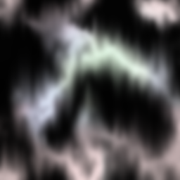

13. 扭曲背景！¶
概要¶
本章介绍如何在Effekseer中扭曲背景。在现代游戏中，有一些特效可以使背景变形。在Effekseer中，你也可以通过设置参数用特效扭曲背景。

本章制作的特效1 |

本章制作的特效2 |
你可以通过下面的链接下载为本章内容预制的特效素材。
使用方法¶
要使背景扭曲，需要一张扭曲贴图。该图像描述关于扭曲的信息，而不是颜色信息。
扭曲贴图几乎与正常图像相同。红色代表左-右方向的扭曲强度：以127为中心，0向左扭曲，255向右扭曲。绿色代表垂直方向上的扭曲强度：以127为中心，0向上扭曲，255向下扭曲。蓝色不被读取。

扭曲贴图
请打开effect1.efkefc。
在基础渲染设置面板中，将Distortion节点的纹理设置为Texture/Distortion.png。并将材质设置为扭曲（背景）。
建议在环境面板中设置背景图片，这样更容易看明白。

Distorted background

绘制优先级¶
基本上，只能扭曲背景，不能扭曲自己的特效。然而，你可能想扭曲自己的特效。在这种情况下，你可以在深度面板中改变绘制优先级。
绘制优先级决定了节点之间的绘制顺序。 通常情况下，一个节点在节点树中的位置越低，它就越晚被绘制，但如果绘制优先级不同，绘制优先级高的节点就会更晚被绘制。
绘制优先级为-1或更低的节点将被绘制优先级为0或更高的节点扭曲。
改变粒子节点的绘制优先级，你会看到粒子节点的粒子被扭曲节点扭曲。

绘制优先级：0 |

绘制优先级：-1 |
用例¶
扭曲也可以和环与UV滚动配合使用。通过结合环和UV滚动，可以轻松出径向扭曲的效果。
这个特效是一个结合环和UV滚动的例子。左边的图像应用于调整了参数的环。中间的图像是在没有扭曲的情况下应用左边的图像的结果。右边的图片是使用了扭曲与UV滚动的效果。白色颗粒向各个方向散射。
|

扭曲贴图 |

未被扭曲的特效 |
特效 |
总结¶
本章介绍了扭曲。用得好的情况下，效果会更好。我们鼓励你做出尝试。